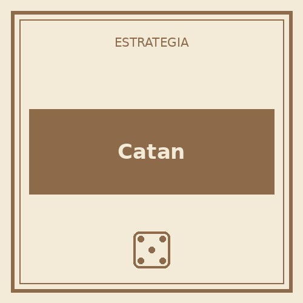

Catan
3-4 jugadores · 60-90 min
El clásico de comercio y colonización. La combinación de suerte con los dados y negociación constante entre jugadores lo hace ideal para grupos que recién se inician en juegos de estrategia.
Descargar reglamento (PDF)